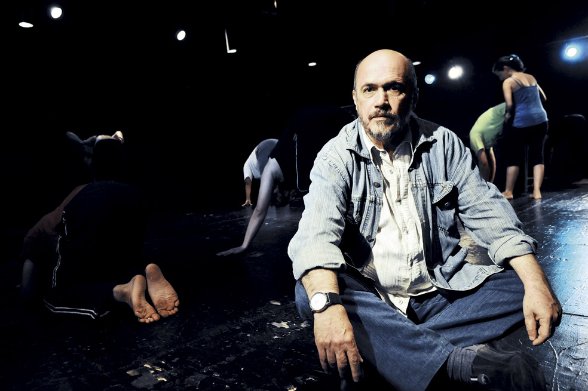

"El 90% del teatro es innecesario"
Por: Angélica María Cuevas G.
Tuvieron que pasar 20 años para que Cristóbal Peláez, se atreviera a llevar al escenario
‘Las danzas privadas de Jorge Holguín Uribe’.

Cristóbal Peláez detesta a esos “ ‘Stand Up Comedy’ con las naderías que les ocurren a unos estúpidos que buscan deleitar a idiotas”. / Luis Benavides - El Espectador
¿Dónde se encontró con Jorge Holguín Uribe?
Un día me llegó por azar un ejemplar de Danzas privadas y se me reveló como un manual de mantenimiento estético. Sabía que algún día lo llevaría a un escenario. Tardé 20 años.
¿Cómo describe bailarín, coreógrafo, escritor, actor, dibujante y matemático?
¿Cómo describe bailarín, coreógrafo, escritor, actor, dibujante y matemático?
¿Qué contiene el Libro en tres transfusiones?
Dos inéditos: Pafi, el virus y yo, su diario de enfermedad, Ricardo Corazón de Gelatina, relato de su viaje a Egipto y la reimpresión de Danzas privadas, manual de rituales, una joya.
¿Qué le significó Pafi al autor?
En esa lejanía y con su salud deteriorada, un interlocutor que le brindaba la posibilidad de hablar con su familia, con su país y con él mismo. Es una obra de una hermosura muy dolorosa.
¿Cuál es la obra que más disfruta de Holguín Uribe?
Danzas privadas, por supuesto.
¿A quién invitaría a una danza privada?
A la mujer que toda la vida me ha atormentado, Louise Brooks.
Angelitos Empantanados, El atravesado, Los diplomas, ¿qué lo apasiona de la obra del caleño Andrés Caicedo?
El desenfado, ese lenguaje contaminado por la música y el cine que rompe con las narrativas descriptivas y sociológicas logrando con talento sumergirse en una urbe que aún no era capaz de ser expresada.
¿En una frase... cómo describe a Fernando González?
Un hombre que vivía a la enemiga.
¿Andrés Caicedo?
El niño más hermoso de Colombia.
¿García Lorca?
Una obra maestra de la cultura.
¿Fernando Pessoa?
Un farsante que sabía demasiado.
¿Sylvia Plath?
!Pobre desdichada!
¿Edgar Allan Poe?
La tercera persona de la Tenebrísima Trinidad (Baudelaire y Pessoa, las otras)
¿Qué tan peligrosos logran ser los egos de los actores de teatro?
Los actores, si lo son, constituyen las criaturas más desprendidas de si mismas pues cada noche deambulan por el escenario enganchando a otros a su existencia.
¿Qué le significa al Matacandelas haber sido declarado desde hace 20 años patrimonio cultural de Medellín?
Nada. Sirve para lo que sirve una teta de hombre.
Son más de treinta años dedicados al teatro, ¿Las tablas para qué?
Uno ambiciona que el teatro que realiza abasteciera alguna necesidad. Creo que es deleitoso y hasta necesario ir al encuentro de la memoria, la representación de la humanidad como sujeto dramático. Aún así el 90% del teatro que se hace es innecesario.
¿Qué tipo de montajes se niega producir?
Todos aquellos que no tengan nada que ver con el sueño, con la muerte, con el infortunio, con el misterio. Detesto el teatro de entertainment, esos soporíferos shows basados en chistecitos anecdóticos de yoismos y picardías sexuales, esos Stand Up Comedy con las naderías que les ocurren a unos estúpidos que buscan deleitar idiotas.
¿Con quién quisiera tener una velada metafísica?
!Con Samuel Beckett!
¿Qué ha significado el Matacadelas para la historia del teatro en Medellín?
Difícil precisar. Es tarea de investigadores. Por lo pronto podemos decir que modificamos la calle Bomboná, algo movimos en el universo, ¡qué gran tarea!
¿Medellín tiene la agenda cultural que se merece?
Se dice que ahora hay sobreoferta. En los momentos de desesperanza uno piensa que a este pueblo le basta y le sobra con el Almanaque Bristol.
¿Una obra de otro teatro que recomiende por estos días en Medellín?
Y cuando llegamos éramos otros, del grupo Nuestra Gente, con cerca de 80 actores-vecinos representando la historia de su sede teatral, un burdel de barrio.
¿Qué elementos debe tener una obra de títeres para que funcione?
Grotesco, humor, versatilidad, música.
¿Cuál es el reto detrás de hacer teatro para niños?
No caer en un lenguaje arborizante, tono tías moralistas con bigote.
¿Qué le significa la participación en el Festival Iberoaméricano?
Hacer más visible nuestro recién nacido. Para nosotros los provincianos la capital es…la capital.
¿Un personaje, de alguna de sus obras, que no deje de inquietarle?
Carevaca, ese angelito deforme de la obra de Andrés Caicedo
¿En qué lugar de sus obras se evidencia la marca MATACANDELAS?
¿Quien está ahí?, un texto corto de Jean Tardieu.
¿Qué elementos lo definen como director?
El lenguaje cinematográfico, la música, la honestidad actoral. A los actores siempre les estoy marcando la diferencia entre exhibirse y actuar. El escenario es un espacio filosófico.
¿Ha crecido el teatro en Colombia?
Admirablemente. De la ausencia pasamos a una práctica regular, diversa, inquieta, generosa.
¿Cuál es el teatro colombiano que más admira?
Al Teatro La Candelaria, ellos son nuestros Rolling Stones.
¿Quisiera vivir en OtraParte?
No soy tan campestre, mi reverberación interior me pide acción, urbe, avisos, smog, edificios, gente. Me acomodaría muy bien en Las Vegas, soy animal nocturno.
¿Su poeta colombiano favorito?
Jaime Jaramillo Escobar
¿Dos novelistas de culto?
Beckett y Kafka.
¿Cuál es la mejor compañía para la creación?
La compañía de mis actores y actrices, formamos un equipo dinámico, alegre, entusiasta.
¿A qué o a quién le debe una obra?
Digo la frase que tanto repito de Andrés Caicedo: ahora estoy recogiendo datos para elaborar un nuevo sufrimiento.
¿Tiene agüeros?
Si, una escalera acostada entre el escenario y el patio de butacas.
¿Qué soñaba ser de niño?
No tener que trabajar nunca.
¿Practica algún ritual?
Si, el cigarrillo, el tinto la conversación, la meditación, las 30 vueltas que doy cada mañana antes de decidirme a la ducha ¡qué gran aristócrata es uno cuando siente que su oficio no es un trabajo!
Fuente: http://www.elespectador.com